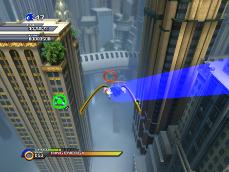
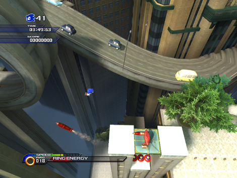
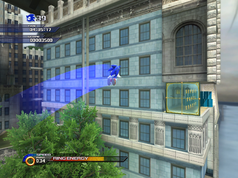
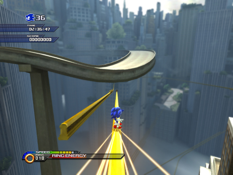
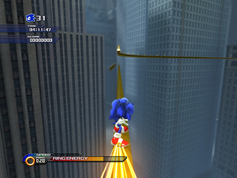
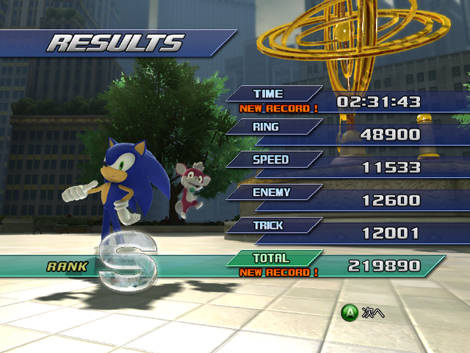

『タイムアタック企画第3回☆ スカイスクレイパースキャンパーAct1』
2009年03月31日
こんにちは！ マツバラです！
本日は、開発者によるタイムアタック第3弾☆
都会の摩天楼、エンパイアシティの
『スカイスクレイパースキャンパー』Act１をお届けします！
ヨシノです。
というわけで、エンパイアのステージAct1の
制作者の席に来てるわけですが……
岡田 ： うん、よろしくね。
岡田さんは
アポトスの『ホワイトアイランド』Act2の
制作者でもありますよね！
…………。
ん？
ヨシノ、どうしたの？
岡田さん……
岡田 ： ん？
何故ですか。
岡田 ： な、なんのこと？
私でも死なずにクリアできる名ステージ
『ホワイトアイランド』Act2を作った岡田さんが
なんでこんなに難しいステージを作るですか。
私がここで
何回落ち死にしたと思ってるんですか。
ヨシノが殺したソニックたちに謝ってください。
ヨシノが泣きながら
嫌な言いがかりをつけてる！
岡田 ： そ、それはごめんね。
しかも岡田さんも謝ってるし！
(なんていい人なんだろう……)
ごめんで済んだら残機数はいらんのです。
ヨシノ！
しつこく絡まないの！
でも、確かに、ECのAｃｔステージは
『SWA』の中でも難易度が高いですよね。
『SWA』中、もっともスリリングかつ
ハードボイルドな雰囲気を味わえるコースじゃ
ないでしょうか！
私はすっかり
ソニックの「うわぁ～」という悲鳴を
聞き飽きました。
岡田 ： 終盤ステージだし、難しめではあるよね。
うっうっ……
岡田さん、アポトスステージを作ったときの
優しい気持ちを思い出してください。
岡田 ： えーっと。
じゃあ、攻略のコツを教えていくからね。
よろしくお願いします！
岡田 ： まずは、スタート直後のこのポイント。

いきなり空中に放り出されて
急いでホーミングアタックしないと
落ちるところですね……。
岡田 ： ここで勇気を出して左側に飛び出すと、
隠しルートがあるんだ。
連なるリングをライトダッシュで進んで乗り継いでね。
スタート直後にいきなり隠しルートなんて
粋ですね！
岡田 ： このステージは、隠しルートをたくさん仕込んであるからね。
途中で一瞬だけ見えるギミックにも注目だよ。

岡田 ： このタイミングでストンピングをすると
下のスプリングから飛び上がって
空中ルートを進めるし……

岡田 ： このタイミングで空中ブーストをすると
右側にあるガラス壁を突き破って
ショートカットルートに進めるんだ。
ああっ、言われてみれば
確かにそんなところがあったかも！
とにかく落ちないことに必死で
そんなところ見えてませんでした。
岡田 ： 意識して場所を覚えないと辛いかもね。
それから……

岡田 ： 最後のエリアはたくさんルートがあるけど、これが一番速いルート。
最後のチェックポイントを通過したら、
写真のタイミングで右方向に思い切って飛び降りてみよう。
何故、ゴールを目前に自殺を。
岡田 ： いいや、その下にグラインドレールがあるから。
そこを狙って落下するんだ。
なかなか勇気のいる隠しルートですね！
でも、成功したら
キモチ良さそう～！
岡田 ： うまくグラインドレールに乗ることができたら……

岡田 ： ここで、上のルートに飛び乗るんだ。
最後の壁走りルートをすべてカットできるから
30秒以上もタイムが縮むよ！
おお～っ！
これはすごい！
毎回律儀に壁を駆けていた私は半べそです。
岡田 ： ……で、そんなショートカット技を駆使して出したタイムが、
これです。

ここって、3分切ることができるんですか！
岡田 ： まずは4分を切ることを目指してみてね。
色んなコースがあるから、
コツをつかめばグンと早くなるステージでもあるよ。
……その前にまず、
通路から落ちないようにするにはどうすればいいですか。
練習しなさい！！
ヨシノ、いっつも
難しい足場でもないしエネミーもいない
普通の通路でぼろぼろ落ちてるじゃない！
うっうっう……
ガードレールつけてください……
さてお次はいよいよ
当企画ラスト！
灼熱のあのステージです！
日時: 2009年03月31日 16:00 | パーマリンク


 ソニックを愛する、元気な『SWA』2年目プランナー。
ソニックを愛する、元気な『SWA』2年目プランナー。 マイペースな『SWA』2年目プランナー。
マイペースな『SWA』2年目プランナー。
 ご意見・ご要望はこちら
ご意見・ご要望はこちら RSS
RSS